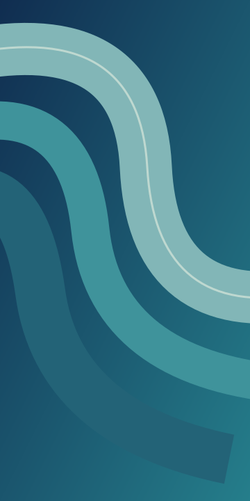
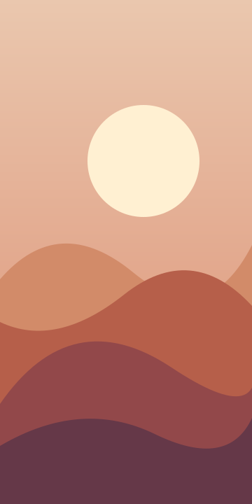

Что он делает
Создаёт пины с изображением обоев, заголовком, описанием и ссылкой на соответствующую публикацию в VK. Работает в рамках расписания публикаций проекта.
Коллекции для вашего экрана
Спокойные оттенки, выразительные формы и обои, к которым хочется возвращаться. Собираем фоны для телефона в сообществе «Обои для iPhone».
Официальная страница проекта и инструмента Oboi Wallpaper Publisher.


О проекте
Независимый проект Ярослава с подборками обоев для смартфонов. Основные публикации выходят в нашем VK-сообществе; Telegram — дополнительный канал проекта.
Этот сайт объединяет информацию о проекте, его инструменте публикации и обработке данных. Связаться с владельцем можно через сообщения VK-сообщества.
Написать владельцу проектаИнструмент проекта
Внутренний инструмент, который мы готовим для публикации подборок в собственном аккаунте Pinterest.
Создаёт пины с изображением обоев, заголовком, описанием и ссылкой на соответствующую публикацию в VK. Работает в рамках расписания публикаций проекта.
Только владелец проекта. Подключение своего аккаунта выполняется через OAuth Pinterest. Сервис для подключения сторонних пользователей не предлагается.
Данные собственного аккаунта, его досок и пинов, материалы публикаций и токен авторизации. Подробности хранения и удаления описаны в политике.
About the app · English
“Обои для iPhone” (Wallpapers for iPhone) is an independent wallpaper project operated by Yaroslav. Oboi Wallpaper Publisher is its internal tool for creating and scheduling image Pins on the project's own Pinterest boards. Each Pin will contain an image, a title, a description, and a link to the corresponding VK post.
The owner authorizes their own account through Pinterest OAuth. The integration requests access to the authorized account and its own boards and Pins. It is not a third-party publishing service. API access is pending; automated Pinterest publishing has not been launched.
Read the privacy policy · Contact the project owner through VK